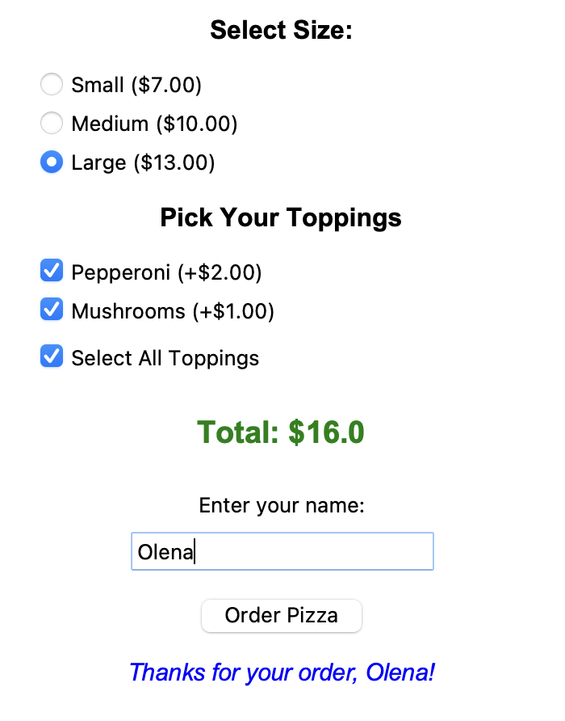
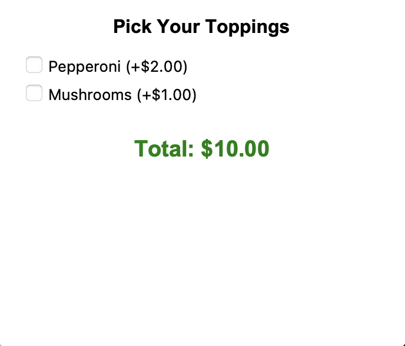
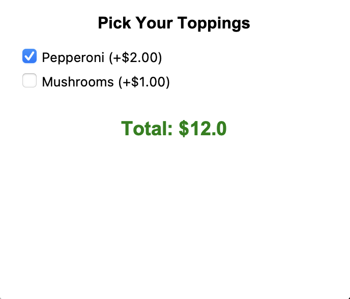
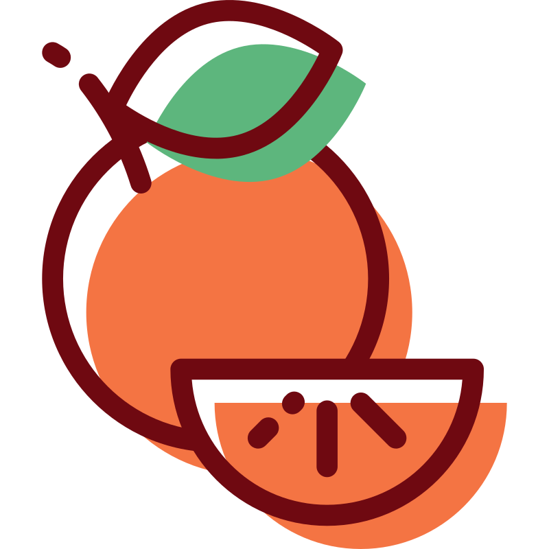

Прапорці Checkbutton
Прапорці Checkbutton
Вступ
Сьогодні ми розглянемо два віджети для вибору опцій у Tkinter:
- Checkbutton (прапорець) — дозволяє обрати декілька варіантів одночасно.
- Radiobutton (перемикач) — дозволяє обрати лише один варіант із групи.
На практиці ми крок за кроком створимо програму "Pizza Builder" (конструктор піци):

Шаблон вікна:
from tkinter import *
window = Tk()
window.title("Pizza Builder")
window.geometry("350x550")
# тут додаватимемо код
window.eval("tk::PlaceWindow . center")
window.mainloop()1. Віджет Checkbutton
Прапорець створюється за допомогою функції Checkbutton(). Він має два стани: галочка стоїть або галочка знята.
box = Checkbutton(
window,
text="Play music",
font=("Arial", 12),
)
box.pack(anchor="w", padx=20)- anchor="w" (від англ. west — захід) — притискає віджет до лівого краю вікна, щоб стовпчик із прапорців виглядав рівно.
2. Змінна BooleanVar та метод .get()
Сам віджет Checkbutton не вміє повертати свій стан. Тому для кожного прапорця створюють спеціальну змінну BooleanVar(), яка зберігає True (галочка є) або False (галочки немає):
music_var = BooleanVar()
def check_music():
if music_var.get() == True:
label.config(text="Music is ON")
else:
label.config(text="Music is OFF")
box = Checkbutton(
window,
text="Play music",
font=("Arial", 12),
variable=music_var,
command=check_music,
)
box.pack(anchor="w", padx=20)
label = Label(window, text="...")
label.pack()- variable=music_var — прив'язує прапорець до змінної.
- command=check_music — запускає функцію щоразу, коли користувач ставить або знімає галочку.
Завдання 1: Вибір начинки
- Створи новий файл pizza.py та налаштуй вікно програми.
- Додай заголовок "Pick Your Toppings" і створи два прапорці Checkbutton: "Pepperoni (+$2.00)" та "Mushrooms (+$1.00)" (або обери інші). Для кожного прапорця створи окрему змінну BooleanVar().
- Додай внизу напис із ціною "Total: $10.00" (базова вартість піци — 10.00; це варто зберегти в окремій змінній).
- Напиши функцію перерахунку ціни, яка при кожному кліку на прапорці перевіряє їхній стан через .get(), додає вартість обраних начинок до базової ціни й оновлює текст у Label.


3. Зміна стану через код: .set()
Поставити або зняти галочку можна не лише мишкою, а й прямо з коду за допомогою методу .set():
| Команда | Що робить |
|---|---|
| var.get() | повертає поточний стан (True або False) |
| var.set(True) | програмно ставить галочку на екрані |
| var.set(False) | програмно знімає галочку на екрані |
Наприклад, можна скопіювати стан одного прапорця в інший:
state = main_var.get()
other_var.set(state)Завдання 2: Прапорець "Обрати все"
- Додай під начинками ще один прапорець — "Select All Toppings" зі своєю змінною BooleanVar().
- Напиши для нього окрему функцію: коли користувач ставить галочку на "Select All Toppings", обидва прапорці начинок мають автоматично увімкнутися. Коли знімає — обидва мають вимкнутися.
- У кінці цієї функції обов'язково виклич функцію перерахунку ціни, щоб загальна сума на екрані теж оновилася.

Перемикачі Radiobutton1. Віджет Radiobutton та StringVar
Перемикачі Radiobutton дозволяють обрати лише один варіант із запропонованих: коли ми натискаємо на один перемикач, попередній автоматично вимикається.
Щоб перемикачі працювали як одна група, усі вони мають прив'язуватися до однієї спільної змінної StringVar(), але мати різні значення value:
level_var = StringVar(value="easy")
def show_level():
label2.config(text=f"Level: {level_var.get()}")
rb1 = Radiobutton(
window,
text="Easy",
variable=level_var,
value="easy",
command=show_level,
)
rb1.pack(anchor="w", padx=20)
rb2 = Radiobutton(
window,
text="Hard",
variable=level_var,
value="hard",
command=show_level,
)
rb2.pack(anchor="w", padx=20)
label2 = Label(window, text="...")
label2.pack()- StringVar(value="Easy") — створює спільну текстову змінну і одразу встановлює варіант за замовчуванням.
- value="Hard" — текст, який запишеться всередину level_var, якщо обрати цей перемикач.
Якщо у вікні потрібно зробити дві окремі групи перемикачів (наприклад, окремо обрати напій і окремо — десерт), для другої групи потрібно створити другу змінну StringVar():
# Перша група перемикачів має variable=drink_var
drink_var = StringVar(value="Tea")
# Друга група перемикачів має variable=dessert_var
dessert_var = StringVar(value="Cake")Завдання 3: Розмір піци
- Створи змінну StringVar для розміру піци (за замовчуванням встанови значення "Medium").
- На самому початку вікна додай заголовок "Select Size:" і три перемикачі Radiobutton: "Small ($7.00)", "Medium ($10.00)" та "Large ($13.00)".
- Зміни функцію розрахунку ціни так, щоб початкова вартість піци залежала від обраного розміру (7.00, 10.00 або 13.00), а вже до неї додавалися обрані начинки.
2. Оформлення замовлення
Наостанок поєднаємо наш конструктор із полем введення Entry та кнопкою Button (приклади роботи з ними можна переглянути у вкладці Додатково).
Завдання 4: Ім'я та кнопка замовлення
- У самому низу вікна додай напис "Enter your name:", поле для введення імені Entry, кнопку "Order Pizza" та порожній Label для виведення подяки.
- Напиши функцію для кнопки: якщо користувач ввів своє ім'я, у нижньому написі має з'явитися текст "Thanks for your order, <ім'я>!".
- Якщо поле залишили порожнім (""), виводь загальне повідомлення: "Thank you for your order!".
 Довідник: Кольори, шрифти та повторення
Довідник: Кольори, шрифти та повторення
Таблиця кольорів
| Базові кольори | Світлі (для фону) | Темні (для тексту) |
|---|---|---|
| "white" | "lightblue" | "darkblue" |
| "black" | "lightgreen" | "darkgreen" |
| "red" | "lightyellow" | "crimson" |
| "blue" | "lavender" | "purple" |
| "green" | "mistyrose" | "indigo" |
| "yellow" | "peachpuff" | "teal" |
| "orange" | "aliceblue" | "darkslateblue" |
| "pink" | "honeydew" | "chocolate" |
Таблиця шрифтів
| Назва шрифту | Як виглядає |
|---|---|
| "Arial" | Чистий сучасний шрифт |
| "Verdana" | Широкий, легко читається |
| "Trebuchet MS" | Стильний м'який шрифт для заголовків |
| "Comic Sans MS" | Неформальний, схожий на комікс |
| "Georgia" | Елегантний книжковий шрифт |
| "Times New Roman" | Класичний шрифт |
| "Courier New" | Моноширинний (як друкарська машинка) |
| "Impact" | Дуже товстий шрифт |
1. Label (Напис)
Створення текстового напису та зміна його тексту або кольору за допомогою методу .config():
label = Label(
window,
text="Hello!",
font=("Arial", 16, "bold"),
bg="lavender",
fg="purple",
)
label.pack(pady=10)
# Як змінити текст або колір пізніше (наприклад, всередині функції):
label.config(text="New text", fg="crimson")2. Button (Кнопка)
Кнопка викликає вказану в параметрі command функцію при натисканні (назва функції пишеться без дужок):
def change_color():
label.config(fg="darkgreen")
btn = Button(
window,
text="Click me",
font=("Arial", 12),
bg="lightgreen",
command=change_color,
)
btn.pack(pady=10)3. Entry (Однорядкове поле введення)
Метод .get() повертає введений текст, а .delete(0, END) очищає поле:
entry = Entry(window, font=("Arial", 14), width=20)
entry.pack(pady=10)
def show_input():
user_text = entry.get() # читаємо текст із поля
label.config(text=user_text)
entry.delete(0, END) # очищаємо поле введення4. Frame (Рамка)
Щоб поставити кілька елементів поруч в один рядок, поміщаємо їх у Frame із параметром side=LEFT:
row_frame = Frame(window)
row_frame.pack(pady=10)
# У якості контейнера вказуємо row_frame замість window
name_label = Label(row_frame, text="Name:", font=("Arial", 12))
name_label.pack(side=LEFT, padx=5)
name_entry = Entry(row_frame, font=("Arial", 12), width=15)
name_entry.pack(side=LEFT, padx=5)5. global
Якщо всередині функції потрібно змінити значення змінної, створеної поза функцією (наприклад, збільшити рахунок або лічильник), використовуємо global:
count = 0
def add_one():
global count
count = count + 1
counter_label.config(text=f"Clicks: {count}")
counter_label = Label(window, text="Clicks: 0", font=("Arial", 16))
counter_label.pack(pady=10)
plus_btn = Button(window, text="+1", font=("Arial", 14), command=add_one)
plus_btn.pack(pady=5)